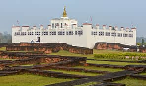

Kathmandu is the capital and largest city of Nepal, with a population of around 1 million. The city stands at an elevation of approximately 1,400 metres (4,600 feet) above sea level in the bowl-shaped Kathmandu Valley in central Nepal. The valley was historically called the "Nepal Mandala" and has been the home of the Newar people, a cosmopolitan urban civilization in the Himalayan foothills. The city was the royal capital of the Kingdom of Nepal and hosts palaces, mansions and gardens of the Nepalese aristocracy. It has been home to the headquarters of the South Asian Association for Regional Cooperation (SAARC) since 1985. Today, it is the seat of government of the Nepalese republic, established in 2008, and is part of the Bagmati Province. Kathmandu is and has been for many years the centre of Nepal's history, art, culture, and economy. It has a multi-ethnic population within a Hindu and Buddhist majority. Religious and cultural festivities form a major part of the lives of people residing in Kathmandu. Tourism is an important part of the economy in the city. In 2013, Kathmandu was ranked third among the top ten upcoming travel destinations in the world by TripAdvisor, and ranked first in Asia.
The city is considered the gateway to the Nepalese Himalayas and is home to several World Heritage Sites: the Durbar Square, Swayambhunath, Boudhanath and Pashupatinath. Kathmandu valley is growing at 4 percentage per year according to the World Bank in 2010, making it one of the fastest-growing metropolitan areas in South Asia, and the first region in Nepal to face the unprecedented challenges of rapid urbanization and modernization at a metropolitan scale. Historic areas of Kathmandu were severely damaged by a 7.8 magnitude earthquake in April 2015. Some of the buildings have been restored while some remain in the process of reconstruction.
Paragliding

Paragliding is the recreational and competitive adventure sport of flying paragliders: lightweight, free-flying, foot-launched glider aircraft with no rigid primary structure. The pilot sits in a harness or lies supine in a cocoon-like 'speed bag' suspended below a fabric wing. Wing shape is maintained by the suspension lines, the pressure of air entering vents in the front of the wing, and the aerodynamic forces of the air flowing over the outside. Despite not using an engine, paraglider flights can last many hours and cover many hundreds of kilometres, though flights of one to two hours and covering some tens of kilometres are more the norm. By skillful exploitation of sources of lift, the pilot may gain height, often climbing to altitudes of a few thousand metres.
chitwan national park

Chitwan National Park is the first national park in Nepal. It was established in 1973 and granted the status of a World Heritage Site in 1984. It covers an area of 952.63 km² and is located in the subtropical Inner Terai lowlands of south-central Nepal in the districts of Nawalpur, Parsa, Chitwan and Makwanpur. In altitude it ranges from about 100 m in the river valleys to 815 m in the Churia Hills.Since the end of the 19th century Chitwan – Heart of the Jungle – used to be a favorite hunting ground for Nepal's ruling class during the cool winter seasons. Until the 1950s, the journey from Kathmandu to Nepal's south was arduous as the area could only be reached by foot and took several weeks. Comfortable camps were set up for the feudal big game hunters and their entourage, where they stayed for a couple of months shooting hundreds of tigers, rhinoceroses, leopards and sloth bears.
Bungee jumping

Bungee jumping , also spelled bungy jumping, is an activity that involves a person jumping from a great height while connected to a large elastic cord. The launching pad is usually erected on a tall structure such as a building or crane, a bridge across a deep ravine, or on a natural geographic feature such as a cliff. It is also possible to jump from a type of aircraft that has the ability to hover above the ground, such as a hot-air-balloon or helicopter. The thrill comes from the free-falling and the rebound. When the person jumps, the cord stretches and the jumper flies upwards again as the cord recoils, and continues to oscillate up and down until all the kinetic energy is dissipated.
Pokhara

Pokhara is a metropolitan city in Nepal, which serves as the capital of Gandaki Province. It is the country's largest metropolitan city in terms of area and second-largest in terms of population. The city also serves as the headquarters of Kaski District. Pokhara is located 200 kilometres west of the capital, Kathmandu. The city is on the shore of Phewa Lake, and sits at an elevation of approximately 822m. The Annapurna Range, with three out of the ten highest peaks in the world—Dhaulagiri, Annapurna I and Manaslu—is within 15–35 mi of the valley.Pokhara is a metropolitan city in Nepal, which serves as the capital of Gandaki Province. It is the country's largest metropolitan city in terms of area and second-largest in terms of population. The city also serves as the headquarters of Kaski District. Pokhara is located 200 kilometres (120 miles) west of the capital, Kathmandu. The city is on the shore of Phewa Lake, and sits at an elevation of approximately 822m. The Annapurna Range, with three out of the ten highest peaks in the world—Dhaulagiri, Annapurna I and Manaslu—is within 15–35 mi (24–56 km) of the valley. Pokhara is considered the tourism capital of Nepal, being a base for trekkers undertaking the Annapurna Circuit through the Annapurna Conservation Area region of the Annapurna ranges in the Himalayas. The city is also home to many of the elite Gurkha soldiers, soldiers native to South Asia of Nepalese nationality recruited for the British Army, Nepalese Army, Indian Army, Gurkha Contingent Singapore, Gurkha Reserve Unit Brunei, UN peacekeeping forces and in war zones around the world.
Lumbini
Lumbinī is a Buddhist pilgrimage site in the Rupandehi District of Lumbini Province in Nepal. It is the place where, according to Buddhist tradition, Queen Mahamayadevi gave birth to Siddhartha Gautama at around 563 BCE. Gautama, who achieved Enlightenment some time around 528 BCE, became the Buddha and founded Buddhism. Lumbini is one of many magnets for pilgrimage that sprang up in places pivotal to the life of the Buddha.In the Buddha's time, Lumbini was situated in east of Kapilavastu and southwest Devadaha of Shakya, an oligarchic republic. According to Buddhist tradition, it was there, that the Buddha was born. A pillar discovered at Rupandehi in 1896 is believed to mark the spot of Ashoka's visit to Lumbini. The site was not known as Lumbini before the pillar was discovered. The translation of Inscription reads: "When King Devanampriya Priyadarsin had been anointed twenty years, he came himself and worshipped (this spot) because the Buddha Shakyamuni was born here. (He) both caused to be made a stone bearing a horse (?) and caused a stone pillar to be set up, (in order to show) that the Blessed One was born here. (He) made the village of Lummini free of taxes, and paying (only) an eighth share (of the produce)." The park was previously known as Rupandehi, 2 mi (2 mi (3.2 km)) north of Bhagavanpura.The Sutta Nipáta (vs. 683) states that the Buddha was born in a village of the Sákyans in the Lumbineyya Janapada. The Buddha stayed in Lumbinívana during his visit to Devadaha and there preached the Devadaha Sutta.
Swayambhunath Temple

Swayambhu is an ancient religious complex atop a hill in the Kathmandu Valley, west of Kathmandu city. The Tibetan name for the site means 'Sublime Trees', for the many varieties of trees found on the hill. However, Shing.kun may be a corruption of the local Nepal Bhasa name for the complex, Swayambhu, meaning 'self-sprung'. For the Buddhist Newars, in whose mythological history and origin myth as well as day-to-day religious practice Swayambhunath occupies a central position, it is probably the most sacred among Buddhist pilgrimage sites. For Tibetans and followers of Tibetan Buddhism, it is second only to Boudha.Swayambhunath Stupa. Find peace and prayers on the little hillock of Swaymbhunath in the northwest of Kathmandu Valley. Visitors for whom the name was a tongue twister have called it "Monkey Temple" from the 1970s. Swayambhu, overlooks most parts of the valley giving visitors a panoramic view of the city.Swayambhunath Stupa, Kathmandu, Nepal. A golden spire crowning a conical wooded hill, Swayambhunath Stupa is the most ancient and enigmatic of all the holy shrines in Kathmandu valley. Its lofty white dome and glittering golden spire are visible for many miles and from all sides of the valley.Swayambhunath stupa is the oldest stupa in Kathmandu and one of the oldest religious sites in Nepal. The historic landmark has been a listed UNESCO World Heritage Site since 1979. Swayambhunath, or the Monkey temple as it is often referred to, is located on the top of a hill west of Kathmandu, and consists of a main (huge) stupa surrounded by Hindu and Buddhist temples and monuments of great cultural and historical importance. Swayambhunath is achingly beautiful and absolutely fascinating. Besides, the site also offers an amazing panoramic view of the capital city. It is definitely a must-see for every traveler landing in Kathmandu.
Pashupatinath Temple

The main temple of Pashupatinath is a building with a bunk roof and a golden spire. It is located on the Western bank of Bagmati and is considered a masterpiece of Hindu architecture. It is a cubic construction with four main doors, all covered with silver sheets. The two-storied roof is made from copper and is covered with gold.The Pashupatinath Temple is a famous and sacred Hindu temple complex that is located on the banks of the Bagmati River, approximately 5 km north-east of Kathmandu in the eastern part of Kathmandu Valley, the capital of Nepal. The temple serves as the seat of Pashupatinath. This temple complex was inscribed on the UNESCO World Heritage Sites's list in 1979. This "extensive Hindu temple precinct" is a "sprawling collection of temples, ashrams, images and inscriptions raised over the centuries along the banks of the sacred Bagmati river" and is included as one of the seven monument groups in UNESCO's designation of Kathmandu Valley Visit Pashupatinath for an unmatched mix of religious, cultural and spiritual experiences. Located 3 km northwest of Kathmandu on the banks of the Bagmati River, the temple area also includes Deupatan, Jaya Bageshori, Gaurighat (Holy Bath), Kutumbahal, Gaushala, Pingalasthan and Sleshmantak forest. There are around 492 temples, 15 Shivalayas (shrines of Lord Shiva) and 12 Jyotirlinga (phallic shrines) to explore. Pashupatinath Temple is one of the eight UNESCO Cultural Heritage Sites of the Kathmandu Valley